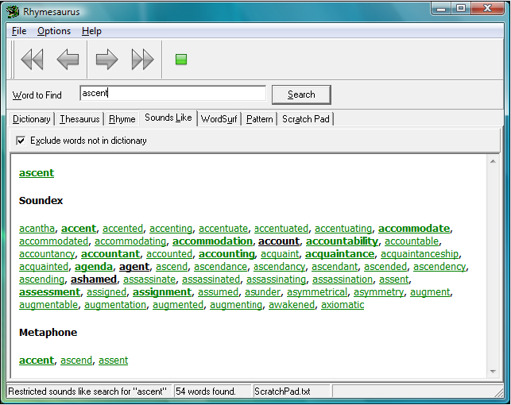

|
Sounds Like Reference |
Top Previous Next |
|
The Rhymesaurus "Sounds Like" Reference is a useful tool when searching for words that sound similar. To find such words, type the word you wish to match in the Word to Find box, select Sounds Like in the Search/Link Action area and click the Search button. Results are found using two standard computer algorithms; Soundex and Metaphone. These algorithms determine, based on a word's spelling, what it sounds like, and find matches for that sound.
Soundex is a simpler algorithm that creates fewer and simpler patterns.Therefore, the Soundex algorithm returns many more words. It is worth noting that Soundex words must start with the same letter to in order for the Soundex algorithm to recognize themas a match. Words that start with "ph" will only be matched with words that start with the letter "p."
Metaphone is a more complex algorithm that creates more specific patterns. For this reason, Metaphone will usually find fewer matches, but these matches will be more precise. Metaphone is a more intelligent algorithm than Soundex, specifically designed for use with the English language. Presented with words that begin with letter combinations such as "ph", Metaphone will come up with matches that start with the letter "f".
The example below shows the search results for the word "ascent."
 |